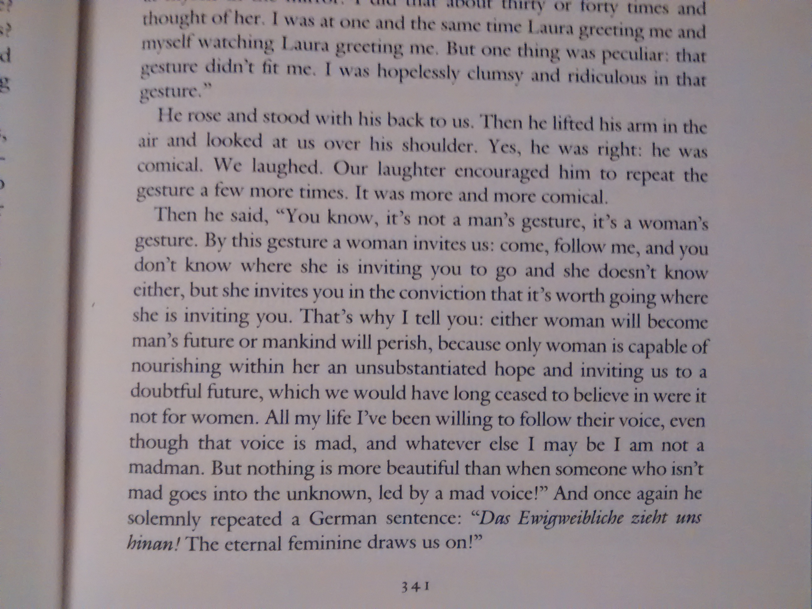

Immortality
Milan Kundera

Kundera has been one of those writers I’ve wanted to read more of. A friend (who loves Kundera’s work) suggested this one, and I bit.
This is an exploration of fame and gesture. In the beginning the narrator sees an older woman make a gesture, a way, that recalls a much younger woman. He realizes that gestures live on their own, separate from the people who make them. This is itself a fascinating thought.
I also checked this book out of the library. Recently, I’ve started reading more on my Kindle, and weirdly I find myself marking books up more by highlighting parts I want to come back to. I wasn’t able to do this with the library book, obviously, so instead I took pictures of what I was reading. I’ve done this on several books since then also.
It’s kind of interesting because the pictures capture more than I want them to, even though I try to angle the shot to draw my attention. So I have to take a minute reading most of what’s in the picture and asking myself what was so compelling in this decontextualized snippet.
So, I still definitely need to read more Kundera.